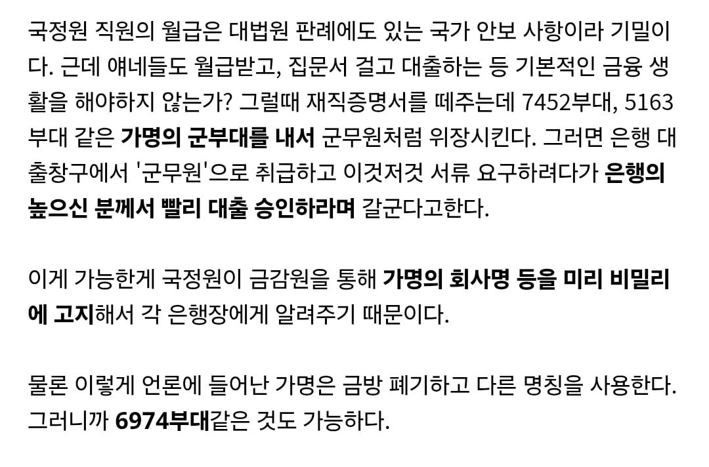

전에 다니던 회사에서 거래 했었는데 댓글로 쓰면 당연히 잡혀가겠지..?
긴가민가 하면 걍 안하는게 정답
국정원 내부에도 진짜 숨겨야 하는 사람이면 어떻게 하든 대출 정도는 국정원 내부 자금으로 해주지 않을까?
은행 지점장 다이렉트로 만나게 해줄걸
예전에 병원에서 일하던 내친구가 말해줬는데 검사장한테서 진료 시간 이후에 간다고 병원에 연락와서 병원장이 의사 몇명 퇴근하지말고 대기하라고 함
이게 10년 전쯤 일임
그게 바로 공직자의 횡령임
국정원 블랙요원들은 군출신이 많고 보통은 그냥 7급 시험 보고 통과한 기밀많은 공무원 아님?